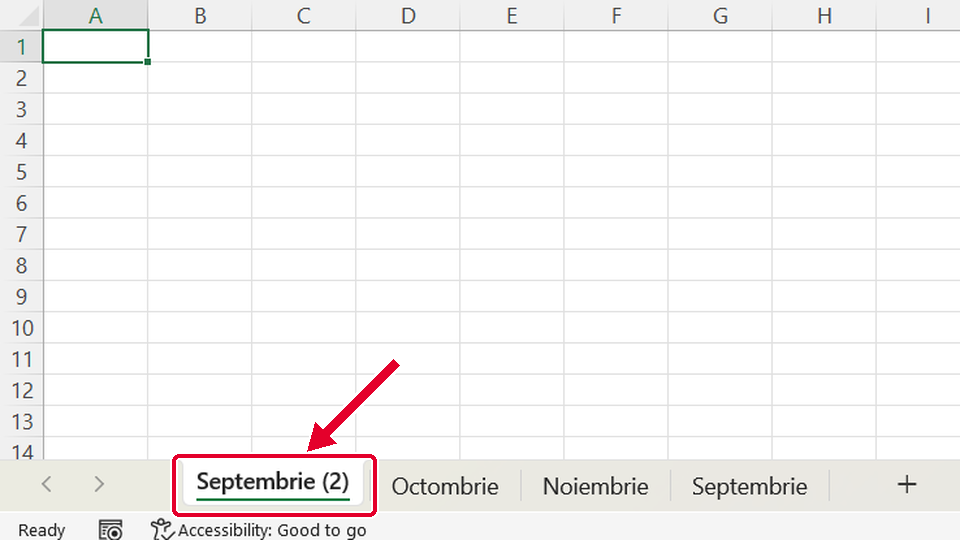
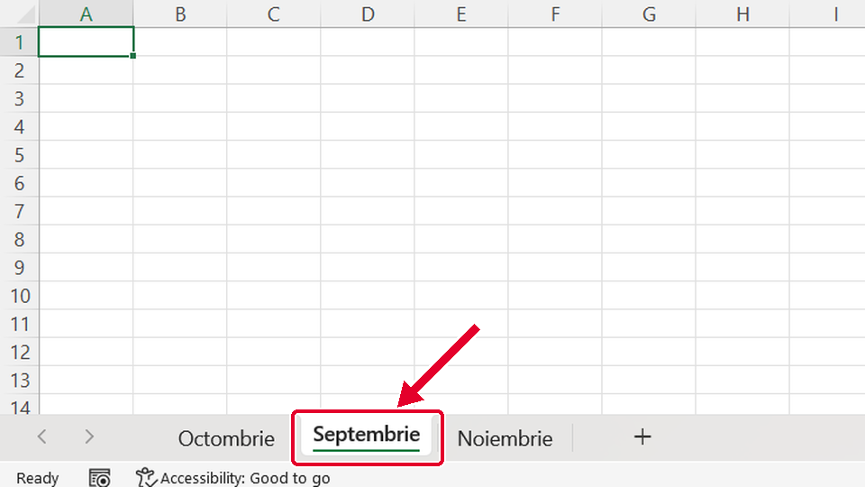
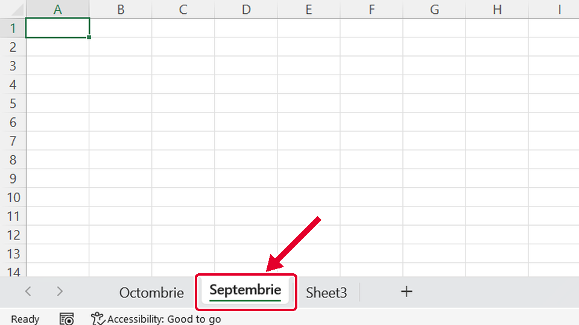

Început
Foaie nouă și mutarea ei
Taste: Spațiu = pauză / continuă · ← și → = pasul anterior / următor · cu Tab ajungi la „Rulează singur”; acolo Spațiu îl pornește sau îl oprește. Poți apăsa și pe film.

Legat de asta
Se deschid într-o filă nouă, ca să nu pierzi filmul de aici.
- ÎnainteRedenumești o foaie ↗
Redenumești o foaie: dublu-clic pe fila ei, scrii numele nou și apeși Enter.
- Același gestCum lărgești o coloană ↗
Tot o tragere: ții apăsat clic stânga, muți mouse-ul și dai drumul acolo unde vrei.
Dacă nu-ți iese
Alege ce vezi pe ecran.
Septembrie apare de două ori: Septembrie (2) la început și Septembrie la sfârșit.

De ce: Ai ținut apăsată tasta Ctrl cât ai tras fila. Cu Ctrl, Excel face o copie a foii în loc s-o mute.
Ce faci:
- Ștergi copia: clic dreapta pe fila Septembrie (2), apoi Ștergere (Delete).
- Tragi fila Septembrie fără Ctrl, înaintea filei Octombrie.
Foile sunt Octombrie, Septembrie, Noiembrie: Septembrie a ajuns la mijloc.

De ce: Ai dat drumul la mouse prea devreme, între Octombrie și Noiembrie. Foaia se pune acolo unde arată micul triunghi negru când dai drumul.
Ce faci:
- Tragi din nou fila Septembrie, de data asta până la marginea din stânga a filei Octombrie.
- Dai drumul abia când triunghiul negru e înaintea lui Octombrie.
Foile sunt Octombrie, Septembrie, Sheet3 (Foaie3): Noiembrie a dispărut, iar foaia nouă are tot numele de probă.

De ce: Ai dat dublu-clic pe fila Noiembrie, nu pe fila foii noi, așa că ai redenumit-o pe ea.
Ce faci:
- Dai dublu-clic pe fila Septembrie, scrii la loc Noiembrie și apeși Enter.
- Apoi dublu-clic pe fila Sheet3 (Foaie3), scrii Septembrie și apeși Enter.
Taste: Enter